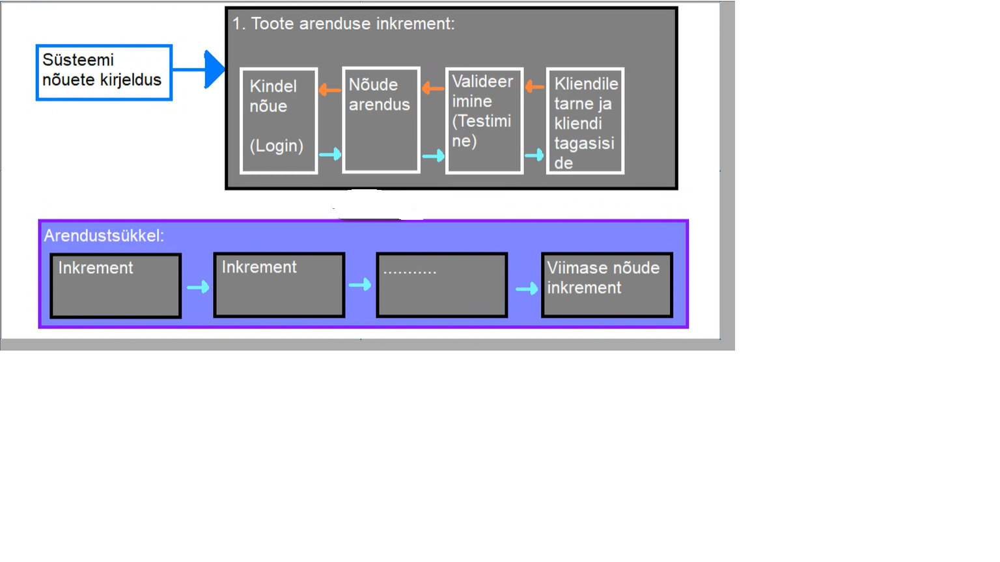

Inkrementaalne arendusmudel on üks viis, kuidas lahendada koskmudeli **jäika tsüklit**. See aitab arendus meeskonnal
arendusmeeskonnal toime tulla muudatustega paremini. Muudatused võivad tulla kas äritegevusest,
kliendi soovidest, turu olukorra muutumist, tehnoloogiate muutumisest, seaduse muutumist või
lõppkasutaja tagasisidest. Kuna koskmudeli keset arendustööd on muudatustega toimetulek
keeruline, on koskmudeli kasutamise puhul muudatuste sisseviimine üsna kulukas. Siinkohal tulebki
appi inkrementaalne arendusmudel. Mudel ise on siis ajagraafikupõhine ja ei tugine, erinevalt
koskmudelist, täielikult valmiskirjeldatud kavandile. Selles mudelis saab arendada erinevaid
programmiosi samaaegselt või erinevatel aegadel.
Incrementlsus arendusmudelis aitab samaegselt arandestood teha kindlad tegevused mida kosemudelis ei ole . Nende tegevuste abil on voimalik kliendile kuvada programile keskse tahstusega osi,
enne kui neid taielikult arendama hakatakse. Tehakse naiteks, kas mingisugune
kasutajaliidese prototuup, voi programeeritakse vahese testimise labinud MVP( Minium viable product) mis omab ainult programmi noetes kirjeldatud keskset funktsiooni.
Naiteks kui tegemsit on failikonvertiga siis ei oma ta suurt kasutajaliides kujundust, ega isige
koik formate mis lopp-program teisendama peab, vaid ainult demonstreerib seadusefunktsionaalsust osaliselt.
| Head kuljed | Halvad kuljed |
|---|---|
|
Kulutused on vaiksemda -Kuna kasutaja noudeid on muutuvad, aga muudatusi saab sise vija arendustsukli kaigus, on nende muudatuste kulud vaiksemad kuna arendutsukli ise ei ole vaja lopuni viia, enne muudatusi sisse-viimest |
Progressi jalgimine on kererukas - arendustoo progressi ei jalgita enam arendutud noute jargi, kuna need ei ole arendustoo alguse valmis, vaid progressi jalgitakse arenduskiirusepohiselt - kui palju igas ajavahemikus naoutest arendada on voimalik . See tekitab siis halduritel noude, et nad vajavad pidevalt dokumentatsiooni arendusttoo hetke kulgemise kohta. Kui arendustoo on ka kiire - siis vahest on ka selle dokumentatsiooni hankimine keeruline, kuna iga vaikse versiooni kohta ei ole motet seda tekitadagi. |
|
Kliendi tagasiide on kohane - olemsolevale arendustoole saab meeskond keset arendust tagasiside, et vajadusel muuta oma noudeid, ja seega arenduse suunda. Klient naib ka kui palju on tehtud. |
Suustemi struktuur aja jooksul degradeerub, kuna arendatakse juurde pidevalt uusi osi ja vahest ka seliste osi mida alguses planeriturd ei olnud siis kipub arendatava toote sisemine susteem spagetistume.Selle valtimmiseks kuulutakse lisaresurside koodi refaktorierimisel, et sisemine struktuu korras hoida. Kui korashoidu ei testata, on hilisem muudatuste ja uute valmisosade integratsioon tunduvalt keerulisem. |
| Tarne on kiirem - klient saab juba funktsioneerivad osad kohe parast arendustoo loppu kasutasele votta, ning klient saab sellest varem kasu kui naiteks tarkvaratootega, mida arendatakse jaige arendusmudeliga. |

Kuna inkrementalne arendust ja interativne arendus on lihtsalt sanased sonad
kipuvad nad inimistel sassi minema, aga nad siiski tahendavad erinevaid asju.